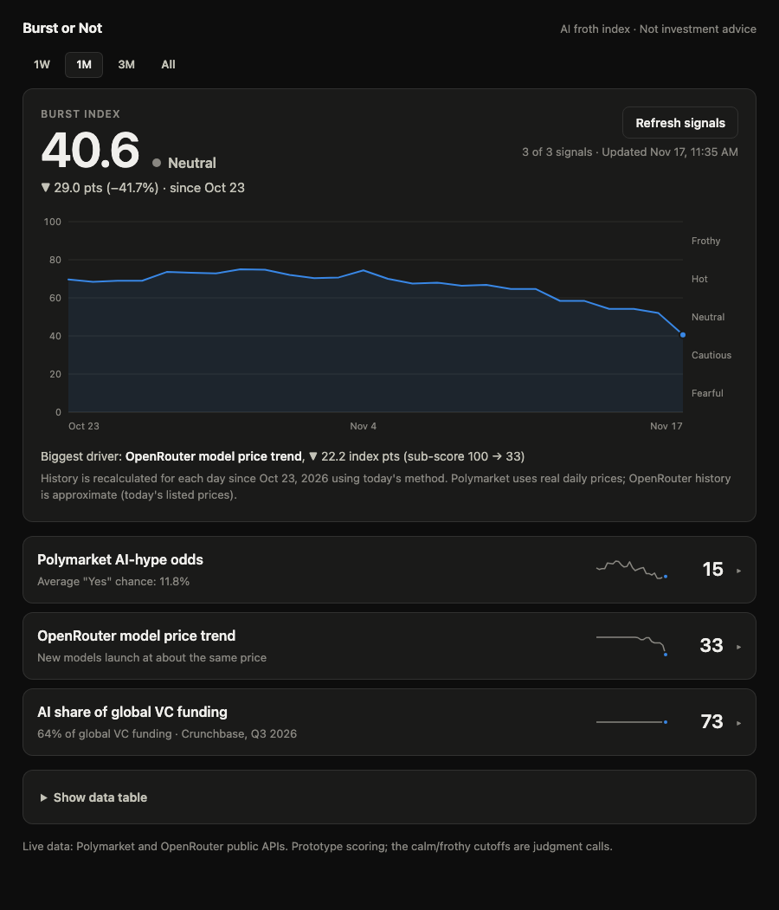

Product Showcase (Prototype / Live App / 2-Min Video)
Current Status: Build 3 (in progress): live app with Burst Index history, published on GitHub Pages
Demo: Open the live app below (no sign-up; data loads live in your browser). Screenshot further down.
Open the live app →

Burst or Not, Build 3 in progress, November 17, 2026, with live data. The Burst Index chart shows daily history since October 23 (1W / 1M / 3M / All), with a hover readout for each day and the biggest driver over the selected range. See the Build 2 screenshot.
Living PRD (Product Requirements Document)
Updated every week as we test with real users and learn what works.
1. Target User & The Job to Be Done
Who is this for? MBA students and VC-curious peers tracking AI, such as NYU Stern tech club members.
The painful "Before" workflow: They piece together AI sentiment from scattered headlines, with no single read on how frothy the market is.
The "After" workflow with this product: A 10-second check of one 0–100 froth score, from Fearful to Frothy, with its drivers visible.
2. Scope & Explicit Non-Goals
- In Scope (Core Workflow): Open app → see the score and its trend → click a signal → see what's driving it.
- Out of Scope #1: Investment advice. The score is a sentiment read, not a recommendation.
- Out of Scope #2: Trading or portfolio features.
- Out of Scope #3: User accounts.
3. How It Works Under the Hood & Riskiest Assumption (Week 2+)
Riskiest Assumption: The froth score isn't credible: the signals don't move sensibly, or users don't trust them.
How this build tests it:
- Live refresh shows whether the score moves sensibly as Polymarket odds and OpenRouter prices change.
- PostHog shows which signal cards users open, meaning which drivers they check before trusting the score.
- Pod testing checks whether people understand what the score means and why it's at its current level.
Simple Architecture: Browser → Polymarket and OpenRouter public APIs (live odds and model prices) → scoring in the page (each signal mapped to 0–100, then averaged with the manual VC-share signal) → headline score, history chart, and signal cards. There is no server, database, or AI model call; everything runs in the browser.
Score history: Like a stock index, each past day since October 23, 2026 is recalculated with today's formula from that day's inputs: Polymarket's real daily prices, OpenRouter models released before that day (at today's listed prices, so approximate), and the VC-share figure in effect. A past day only counts if it has the same signals as today, so a failed data source never creates a fake jump.
Cost per run: $0. Both data sources are free public endpoints that need no API keys.
4. Unit Economics & Analytics Snapshot (Updated Weekly)
Cumulative Build Spend
$0.00 out of pocket
Est. Cost Per User Run
$0 (public endpoints, no keys)
User Evidence (Analytics from Build 2)
[Not yet measured]
Sponsor Call (Week 6)
TBD
Weekly Build Log
Build on at least two separate days each week outside class, including the November 3 break. Push commits and log actual progress, failures, PRD changes, costs, and hours here. All build deadlines are noon, New York time.
Build 1 · Intent.md & Throwaway Prototype (Due Nov 9)
- What shipped: Burst or Not v0: a local web page with a 0–100 AI froth gauge and three signal cards: Polymarket AI-hype odds (live), OpenRouter model price trend (live), and AI share of global VC funding (manual, 64%, Crunchbase Q3 2026). PRD v1 published on this page. See the Build 1 screenshot.
- Things learned with AI: Terminal vs. Git vs. GitHub; branches and pull requests; GitHub Pages deploys only from main. The hardest part was judgment, not code: deciding whether falling model prices signal froth or healthy competition.
- What broke / changed in PRD: My first repo was created without the class template, so I recreated it. npm install hit a permissions error (fixed with sudo and --allow-scripts). Page changes didn't appear until PRs were merged and the browser cache was cleared. PRD decisions: treat falling prices as froth (below-cost land grab); use AI share of VC as the manual signal instead of Nvidia P/E.
- Cost & time this week: $0.00 out of pocket (Claude Pro subscription; Polymarket, OpenRouter, and GitHub Pages are free) · 1 hour
Build 2 · Smallest Local Version & PostHog (Due Nov 16)
- What shipped: A "Refresh signals" button that re-fetches Polymarket and OpenRouter live and recalculates the score. PostHog (pageviews, autocaptured clicks, session recording) is installed on this page and the local app, which now runs on localhost. The app also tracks which signal cards people open. PRD v2 adds the riskiest assumption, how this build tests it, the data flow, and cost per run. Setup and run instructions are in AGENTS.md.
- Things learned with AI: PostHog needs the app served over http://localhost, not opened as a file. A "refresh" can quietly reuse a cached response, so I made every refresh a real network call. A PostHog project token (phc_) is public by design, unlike a secret API key.
- What broke / changed in PRD: PRD v2 names the biggest risk: the froth score isn't credible. This build tests it with live refresh, PostHog card-open data, and pod testing.
- Cost & time this week: $0.00 out of pocket · 1 hour
Build 3 · Build.exe: The Core Workflow (Due Nov 23)
- What shipped (in progress): The Burst Index tracker: a daily history chart of the score since October 23 with 1W / 1M / 3M / All ranges, a hover readout, the biggest driver over each range, small trend lines on each signal card, and a data table. New dark, more professional design. New PostHog event:
chart_range_changed.
- What broke / changed in PRD: The history tested the riskiest assumption right away. The index fell from 69.6 to 40.6 between October 23 and November 17, mostly from the OpenRouter price trend, and that signal turned out to track which models launched (a wave of expensive frontier models) more than real price changes. The core workflow now reads "see the score and its trend" instead of "score and needle."
- Cost & time this week: $0.00 out of pocket · [N] hours
Build 4 · Test.py: Choose Track A or Track B (Due Nov 30)
- Chosen track: [A: 10-case domain eval and one outside target-user review; OR B: 3–5 outside users and replay findings]
- Results and improvements: [Before/after evidence; for Track B, fixes to the top three friction points]
- PRD v4 changes: [What the evidence changed]
- Cost & time this week: $[0.00] · [0] hours
Build 5 · Ship.installer: Launch Ops, Rollback Check & 2-Min Video (Due Dec 7)
- Launch Ops & Safety: [Verified no exposed keys, set spend cap, tested 2-minute rollback]
- 2-Minute Video & Final Polish: [Link/embed above]
- Cost & time this week: $[0.00] · [0] hours